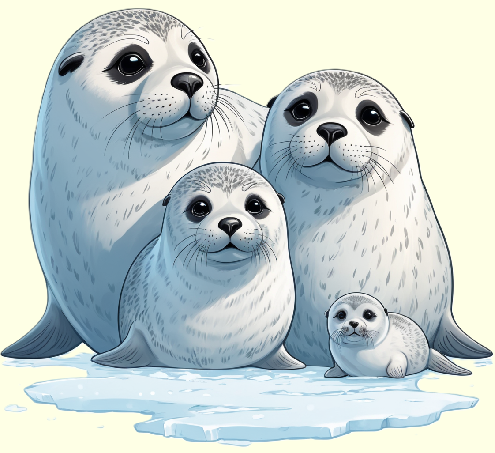

Die Ringelrobbe, ein verspielter Meeresbewohner, beeindruckt mit ihrem gefleckten Fell und ihrer geschickten Anpassungsfähigkeit an das Leben zwischen Wasser und Eis.
Erforsche die faszinierende Welt dieser Robbenart und entdecke, wie sie in den Küstengewässern des Nordens lebt.

Anmutige Jäger des Polarmeers
Ringelrobben, auch als Saimaa-Ringelrobben bekannt, sind Säugetiere, die in den kalten Gewässern der Arktis und des Nordatlantiks beheimatet sind. Mit ihrem charakteristischen Fellmuster, bestehend aus dunklen Ringen auf einem silbrig-grauen Untergrund, sind sie leicht zu identifizieren. Diese Robben haben eine schlanke, stromlinienförmige Körperform, die es ihnen ermöglicht, effizient durch das eisige Wasser zu gleiten. Ringelrobben sind hervorragende Jäger und ernähren sich hauptsächlich von Fischen, Krustentieren und kleinen Meerestieren. Sie haben scharfe Zähne und kräftige Kiefer, die ihnen helfen, ihre Beute zu fangen und zu zerkleinern.
Während der Fortpflanzungszeit versammeln sich Ringelrobben an den Küsten oder auf Eisschollen, wo sie ihre Jungen zur Welt bringen. Die Männchen sind für ihre lautstarken Gesänge während der Paarungszeit bekannt. Die Jungtiere haben bei der Geburt ein weiches, weißes Fell, das im Verlauf der ersten Lebenswochen allmählich grau wird. Ringelrobben sind an das Leben in eisigen Gewässern angepasst und können auch kurze Tauchgänge unter das Eis unternehmen, um nach Nahrung zu suchen. Ihr Überleben ist jedoch zunehmend durch den Klimawandel und den Rückgang der arktischen Eisschollen bedroht.
Gefährdete Bewohner der Arktis
Ringelrobben sehen sich verschiedenen Bedrohungen gegenüber, die ihren Lebensraum und ihre Populationen beeinträchtigen. Die Schmelze der arktischen Eisschollen durch den Klimawandel führt zu einem Verlust von wichtigen Brut- und Ruheplätzen für diese Robben. Darüber hinaus hat der steigende Schiffsverkehr in arktischen Gewässern zu einer erhöhten Gefahr von Kollisionen und Lärmbelästigung geführt. Um den Schutz dieser faszinierenden Meeresbewohner zu gewährleisten, sind internationale Bemühungen zur Erhaltung der arktischen Lebensräume und zur Reduzierung der menschlichen Einflüsse unerlässlich.
Forschungseinrichtungen und Naturschutzorganisationen verfolgen aufmerksam die Populationen der Ringelrobben und ihre Reaktionen auf Umweltveränderungen. Die Erhaltung dieser Arktisbewohner erfordert auch die Sensibilisierung der Öffentlichkeit für die Bedrohungen, die sie erleben. Durch die Implementierung von Schutzmaßnahmen, wie dem Schaffen von Meeresschutzgebieten und der Reduzierung von Treibhausgasemissionen, kann der Mensch dazu beitragen, das Überleben der Ringelrobben und anderer arktischer Tierarten zu sichern.